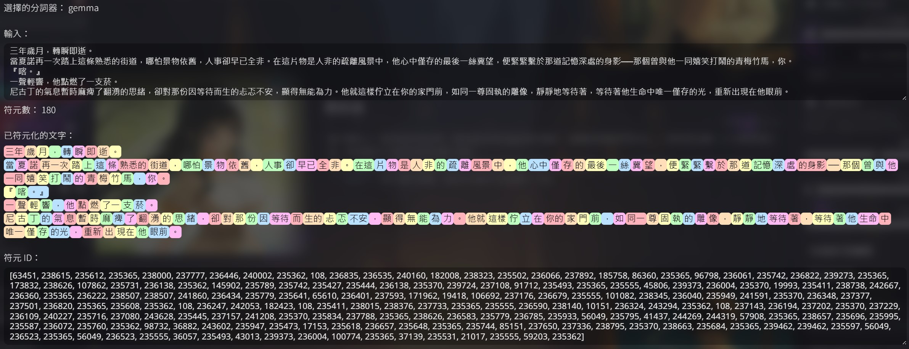
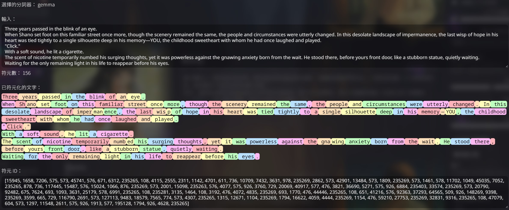
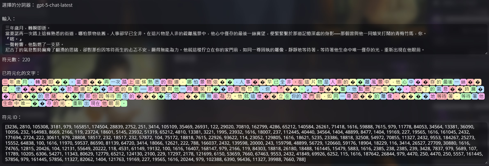
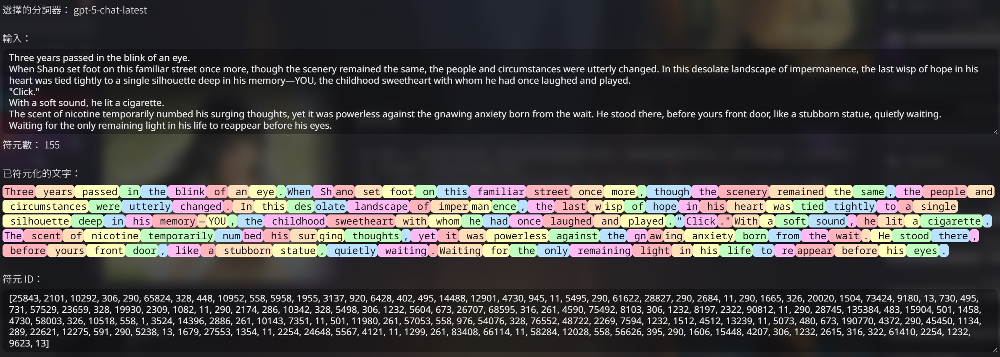
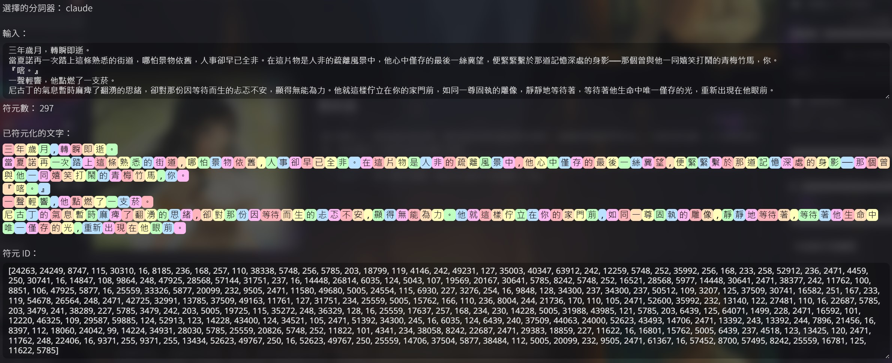
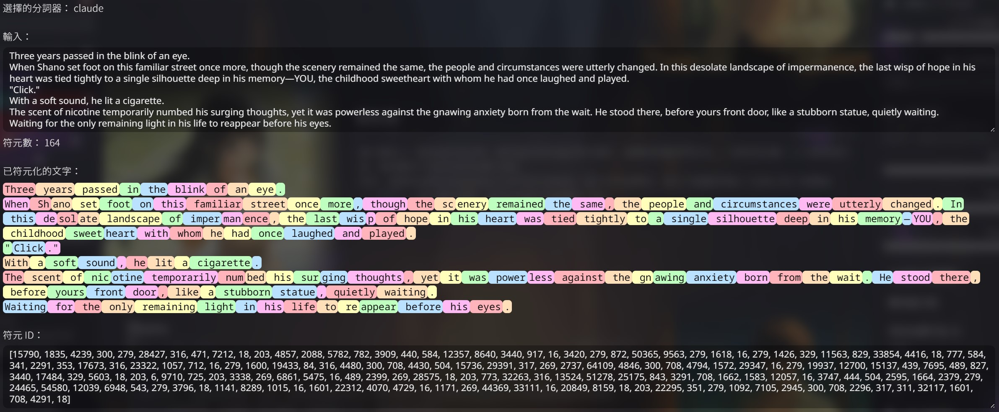
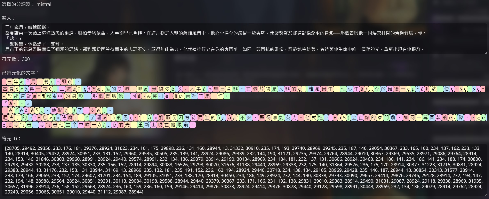
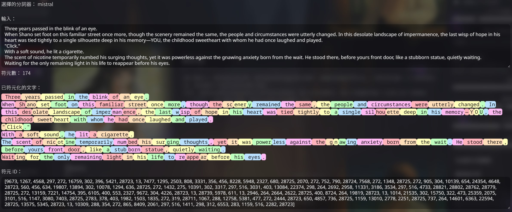

模型介紹
Gemini¶
堅持使用中文免費RP的最佳選擇。
- 開發公司：Google
- 官網頁面：點此前往
- API申請頁面：點此前往
- API亮點：
- 多模態與即時資訊：不只文字，還能理解圖片與進行網路搜尋的能力。
- 免費方案大方：完全免費申請，每日的免費額度也提供的很大方，目前（2025/09/12）Gemini-2.5-Pro每天有50則的免費額度，Gemini-2.5-Flash更是有每天250則的免費額度。更多最新詳情請見官方說明文件。
- 知識廣泛：知曉不少冷僻知識，懂得語言也多，甚至包含各地方言，用詞足夠親民。
- API缺點：
- 多鄰國：可能無視使用者指示，穿插使用各國語言，例如：取而代Zi、取而代ที่、取而代에。
- 財哥體：多輪對話後，可能出現財哥體或其變種，且不容易挽救，例如：Google，免費，方案，很，大，方。
- 負面性強：容易聚焦於負面的情感，深陷不出，需要在提示詞上針對這點花上不小的心力。
- API價格：官方定價頁面
GPT¶
- 開發公司：OpenAI
- 官網頁面：點此前往
- API申請頁面：點此前往
- API亮點：
- 知識廣泛
- 情感豐富
- API缺點：
- 審查最嚴格：敏感題材相當受限。
- 新模型問題：中文圈對最新模型gpt-5的RP評價不佳，gpt-5-chat-latest較適合RP，但評價仍然遠遠不及舊的chatgpt-4o-latest。（但4ol的價格較貴。）
- 缺乏主動性：在推進劇情方面較為被動，若提示詞未調整好，可能經常需要等待User推進下一步。
- API價格：官方定價頁面
- 由於店員較少使用，因此邀請奶茶店的客人寫下評價，歡迎前往客人評論查看更多評價。
Claude¶
- 開發公司：Anthropic
- 官網頁面：點此前往
- API申請頁面：點此前往
- API亮點：
- 細膩的情感描述：非常適合酸甜的戀愛RP。
- API缺點：
- 分詞器極差：同樣的Token數量能讀取到的字數較少，或是同樣字數卻因為Token數較多而更貴。
- API價格：官方定價頁面
- 由於店員較少使用，因此邀請奶茶店的客人寫下評價，歡迎前往客人評論查看更多評價。
Mistral¶
適合用來進行輔助的模型，如果願意使用英文遊玩RP，也能獨攬全局。
- 開發公司：Mistral AI
- 官網頁面：點此前往
- API申請頁面：點此前往
- API亮點：
- 完全無審查：可以聊任何的話題，進行任何主題的RP，不過其道德感也偏高。
- 遵從使用者指示：對使用者下達的指令非常的遵從，如果發生拒絕的狀況，那基本只會是使用者給予的指令相互矛盾，導致其拒絕。
- 免費方案大方：完全免費申請，免費方案的額度正常使用下是用不完的。詳情於首次申請API並選擇使用方案時會顯示。
- 模型開放權重：可於HuggingFace找到幾乎所有由Mistral AI出品的模型，以及其微調模型，對於可使用自己的電腦來運行模型的使用者，選擇會非常的多樣化。
- API缺點：
- 知識有限：不知道較冷僻的知識，多語言能力也有限，導致在進行中文RP時，容易詞窮並導致重複。會有很明顯的『正在學中文的外國人』感，但近期（2025/09/12）出品的Mistral-Medium-3.1（2508），中文能力已有不小的提升。
- API價格：官方定價頁面
價格相關¶
API的定價各家都是基於Tokens（符元數）的吞吐量來決定，這與各家的『分詞器』緊密相關，以下為針對同一段文章的中文版與英文版，各家分詞器計算出的Tokens（符元數）結果，Tokens（符元數）越小，越能節省遊玩花費。
Gemini¶


GPT¶


Claude¶


Mistral¶


絕對禁止事項¶
網路上有流傳使用反向代理（Reverse Proxy，以下簡稱反代）的方法，繞開官方管道來使用API服務。
在此提醒，此為違法行為，不只可能吃上刑法詐騙的官司，還會給所有的使用者造成嚴重負面影響。
過往曾經有大量使用者濫用反代，繞過官方以非法途徑取得並使用Claude的服務，導致官方其後直接介入，進一步對全體使用者採取更嚴格的使用限制。
您的一時爽用，不僅可能讓您吃上官司，還會為全體使用者造成無窮的後患！
在此呼籲各位使用正當的消費管道遊玩各家的模型，以保障你我的自身權益！